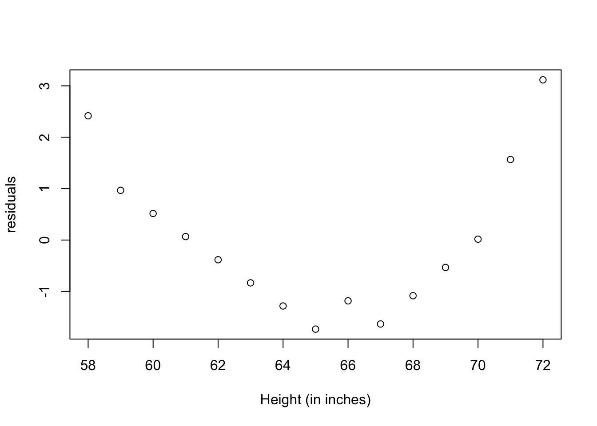
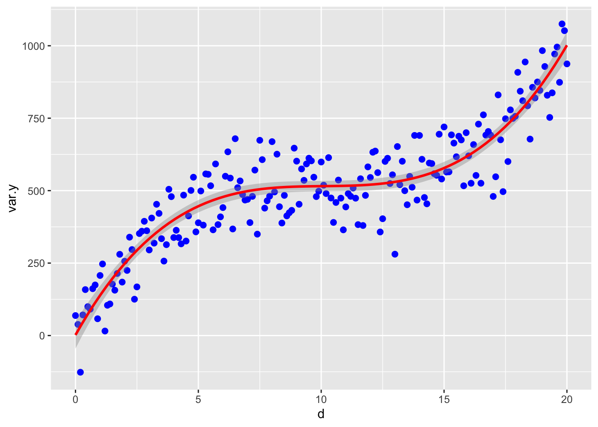
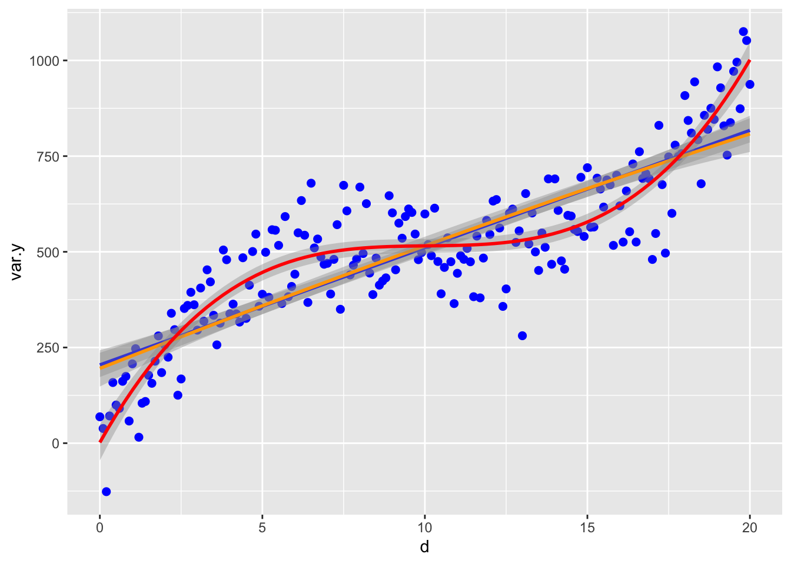
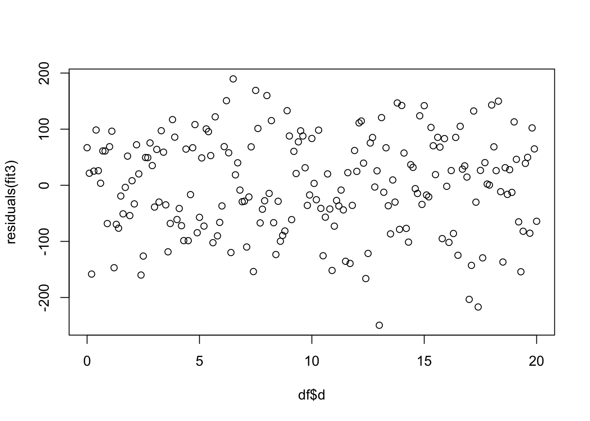

Regresion cuadratica


if (!require("pacman")) install.packages("pacman")
pacman::p_load(QuantPsyc, car, tidyverse, sjPlot)
library(QuantPsyc)
library(car)
library(ggplot2)
library(tidyverse)
library(sjPlot)Regresión Polinomial
El gráfico de residuos de la regresión lineal indica una distribución no aleatoria del error de predicción del modelo lineal. Es posible que pueda mejorar su predicción utilizando una regresión con un término cuadrático (es decir, X2), por lo que ahora tenemos una regresión con un polinomio.
Construcción de un modelo con polinomio. Usamos los datos de 15 observaciones de mujeres en el archivo women en el paquete datasets. Los datos representa la altura (en pulgadas) y el peso (en libras) de 15 mujeres entre las edades de 30 a 39.
Nota aquí que se usa I(x^2) para añadir el polinomio al cuadrado \(x^2\) . Ahora nuestro modelo evaluará el efecto de la regresión lineal y cuadrática. El resumen del modelo se observa que el modelo incluye tanto el intercepto, la ecuación lineal y el polinomio, y cada uno es significativo. Esto quiere decir que tanto el modelo lineal y el polinomio explica parte de la varianza.
##
## Call:
## lm(formula = weight ~ height + I(height^2), data = women)
##
## Residuals:
## Min 1Q Median 3Q Max
## -0.50941 -0.29611 -0.00941 0.28615 0.59706
##
## Coefficients:
## Estimate Std. Error t value Pr(>|t|)
## (Intercept) 261.87818 25.19677 10.393 2.36e-07 ***
## height -7.34832 0.77769 -9.449 6.58e-07 ***
## I(height^2) 0.08306 0.00598 13.891 9.32e-09 ***
## ---
## Signif. codes: 0 '***' 0.001 '**' 0.01 '*' 0.05 '.' 0.1 ' ' 1
##
## Residual standard error: 0.3841 on 12 degrees of freedom
## Multiple R-squared: 0.9995, Adjusted R-squared: 0.9994
## F-statistic: 1.139e+04 on 2 and 12 DF, p-value: < 2.2e-16Visualizando el gráfico.
Nota que la linea azul representa el modelo de regresión lineal y la linea roja representa el modelo \(x^2\). Es claro que el modelo \(x^2\) es un mejor modelo ya que los datos se acerca más a la linea.
ggplot(women, aes(height, weight)) +
geom_point(color ="blue", size=2) +
geom_smooth(method=lm)+
stat_smooth(aes(), method = "lm", formula = y ~ poly(x,2),
color ="red", se =TRUE, size = 1) +
labs(x="Height, inches", y="Weight, lb.")## `geom_smooth()` using formula 'y ~ x'Visualizando los residuales
Recuerda que los residuales tienen que ser normalmente distribuido a través de la variables de x. En este caso vemos que lo tamaño de residuales no están concentrado en un área de la gráfico. Por ejemplo los residuales no son más grande en los valores de x más grande.

La nueva ecuación polinomial es la siguiente:
\[y=\alpha+b_1x_i+b_2x_i^2+\epsilon\]
donde el intercepto \(\alpha\) más los dos coeficientes, \(b_1\) para el componente lineal y el component cuadratico \(b_2\), el \(\epsilon\) son los errores.
\[y=261.9-7.35*x_i+0.08*x_i^2\]
tab_model(
fit2,show.df = TRUE,show.stat = TRUE,
CSS = list(
css.depvarhead = 'color: red;',
css.centeralign = 'text-align: left;',
css.firsttablecol = 'font-weight: bold;',
css.summary = 'color: blue;'
)
)| weight | |||||
|---|---|---|---|---|---|
| Predictors | Estimates | CI | Statistic | p | df |
| (Intercept) | 261.88 | 206.98 – 316.78 | 10.39 | <0.001 | 12.00 |
| height | -7.35 | -9.04 – -5.65 | -9.45 | <0.001 | 12.00 |
| height^2 | 0.08 | 0.07 – 0.10 | 13.89 | <0.001 | 12.00 |
| Observations | 15 | ||||
| R2 / R2 adjusted | 0.999 / 0.999 | ||||
Interpretación de la tabla de resultados
La cantidad de variación contabilizada ha aumentado al 99,9%. La significación del término cuadrático (t = 13.89, p <0.001) sugiere que la inclusión del término cuadrático mejora el ajuste del modelo. El error de predicción (residuales) es menor y su distribución parece más aleatoria.
Modelo cúbico
Aquí un ejemplo para evaluar si los datos tienen una distribución cubica. Primero creamos un conjunto de datos.
Los valores en la variable x
Los valores en predicho en la variable y
Crear un conjunto de datos que tiene variación. Donde los datos tienen una variación con distribución normal con un promedio de 10 y una desviación estandar de 80.
Unir los datos un un tibble
Visualizar los datos con el polinomio al \(x^3\).
ggplot(df, aes(d, var.y)) +
geom_point(color ="blue", size=2) +
stat_smooth(method = "lm", formula = y ~ poly(x,3),
color ="red", se =TRUE, size = 1)
Ahora vemos como se ve los modelos de regresión lineal y cuadratico. nota que el cubico los datos siguen mucho mejor los datos.
ggplot(df, aes(d, var.y)) +
geom_point(color ="blue", size=2) +
geom_smooth(method=lm, color="blue")+
stat_smooth(method = "lm", formula = y ~ poly(x,2),
color ="orange", se =TRUE, size = 1)+
stat_smooth(method = "lm", formula = y ~ poly(x,3),
color ="red", se =TRUE, size = 1)## `geom_smooth()` using formula 'y ~ x'
Construir el modelo cubico
fit3 <- lm(var.y ~ d + I(d^2)+ I(d^3), data=df)
tab_model(
fit3,show.df = TRUE,show.stat = TRUE,
CSS = list(
css.depvarhead = 'color: red;',
css.centeralign = 'text-align: left;',
css.firsttablecol = 'font-weight: bold;',
css.summary = 'color: blue;'
)
)| var y | |||||
|---|---|---|---|---|---|
| Predictors | Estimates | CI | Statistic | p | df |
| (Intercept) | 4.53 | -42.65 – 51.72 | 0.19 | 0.850 | 197.00 |
| d | 158.81 | 138.33 – 179.29 | 15.29 | <0.001 | 197.00 |
| d^2 | -16.39 | -18.78 – -14.01 | -13.56 | <0.001 | 197.00 |
| d^3 | 0.55 | 0.47 – 0.63 | 13.84 | <0.001 | 197.00 |
| Observations | 201 | ||||
| R2 / R2 adjusted | 0.830 / 0.828 | ||||
Los residuales del modelo
Se observa que los residuales están distribuido uniformemente entre todos los valores de la variable en x. Por consecuencia cumple con el supuesto de Igualdad de varianza.

Interpretación de la tabla de resultados
La cantidad de variación contabilizada toma en cuenta 84.8%. La significación del término cuadrático (t = 13.31, p <0.001) sugiere que la inclusión del término cubica mejora el ajuste del modelo. El error de predicción (residuales) es menor y su distribución parece más aleatoria.
Residuales y patrones
Evidencia de Residuales que no cumple con Igualdad de varianza.
Aquí se demuestra algunos de los patrones que pudiese sugerir que los datos no cumple con los supuestos de la prueba. El grafico es de Field, Miles and Field del libro Discovering Statistics Using R. La figure 7.15.
En el gráfico arriba a la izquierda es una distribución de los datos que sugiere igualdad de varianza o homogeneidad de varianza.
En el gráfico arriba a la derecha demuestra un patrón de residuales donde los residuales no son distribuido equitativamente, y sugiere heteroescadisticidad de varianza.
En el gráfico abajo a la izquierda un patrón donde sugiere que la relación entre una variable y otra no es lineal.
En el gráfico abajo a la derecha se observa un patrón de residuales donde tanto los datos son heteroescadisticidad y no-lineal.
“Activities reported in this website was supported by the National Institute Of General Medical Sciences of the National Institutes of Health under Award Number R25GM121270. The content is solely the responsibility of the authors and does not necessarily represent the official views of the National Institutes of Health.”